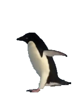
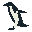

形态做减法，运动保留真实。下面每一帧都来自同一段阿德利企鹅实拍；轮廓和像素角色由确定性图像处理生成。
同一段候选动作周期，不同的信息量；完整步态仍待人工确认。
从可追溯的实拍画面到透明像素帧。
Lauren Farmer 拍摄的阿德利企鹅侧面行走镜头。影像来源 · CC BY 3.0。本页画面为裁剪与像素化改编。


对真实轮廓降采样；白腹来自原帧亮度分类。
分析全段 87 帧，再选出一个重复的动作窗口。
这是一个自动提取原型。周期由归一化轮廓与姿态特征的相似度估计，输出供人工挑选与 pixel cleanup；并非经过人工标注的步态真值；0.33 秒可能只是半步周期。